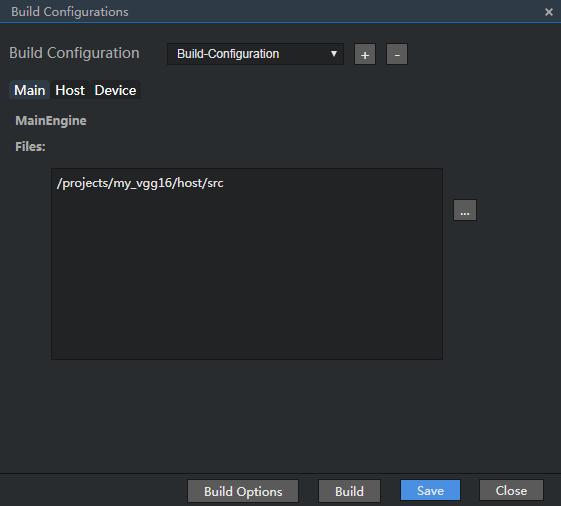
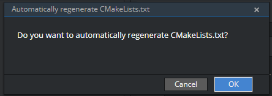
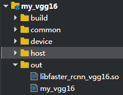

Project Compilation
You do not need to write Makefile. You can compile the file on the compilation GUI provided by Mind Studio as follows:
- Select the project whose project structure needs to be configured, and then choose Build > Edit Build Configuration. The window for configuring a custom project is displayed.
Configure a custom project.
The custom configuration project consists of three tab pages: Main, Host, and Device.
Each .so file needs to be configured on the corresponding tab page based on the side value of each engine in the sample.prototxt file.
Table 1 describes the Main, Host, and Device parameters.
Table 1 Configuration description
To generate the executable file, choose Build > Edit Build Configurations > Main. In the Files area, select all .cpp files in the host/src directory.
In the Include Path area of the Build Options dialog box, fill in the common directory <project_path>/common and host directory <project_path>/host.
To view the value of <project_path>, right-click in the project directory on the left and choose Show References from the shortcut menu. Separate multiple directories to be included by spaces.
For example: /projects/my_vgg16/common /projects/my_vgg16/host
After the configuration is saved, the CMakeLists.txt file is generated in the build folder under the root directory of the project.
After the compilation is successful, the executable file my_vgg16 is generated in the out folder.
Add the engine that needs to run on the host and enter the engine name.
To generate the device library, choose Build > Edit Build Configurations > Device and set Engine Name to faster_rcnn_vgg16 (which is the name of the generated .so library file, and cannot be the same as other generated files). In the Files area, select all the .cpp files in the device/src directory.
In the Include Path area of the Build Options dialog box, fill in the common directory <project_path>/common and device directory <project_path>/device.
To view the value of <project_path>, right-click in the project directory on the left and choose Show References from the shortcut menu. Separate multiple directories to be included by spaces.
For example: /projects/my_vgg16/common /projects/my_vgg16/device
Save the configuration and a folder with the same name as the engine name is generated, which contains the CMakeLists.txt file in the build folder under the root directory of the project.
The .so file is generated in the out folder.
NOTE:The .so file needs to be signed to avoid being tampered with. The signing method is as follows:
- Call the RSA_generate_key interface of the OpenSSL tool to generate the public key pub.pem and the private key pri.pem. The recommended key length is greater than or equal to 2048 bits.
- Use the private key to sign the .so file using the SHA256 algorithm to generate the .so.signature file, which is stored in the same directory as the original .so file.
- Call the SetPublicKeyForSignatureEncryption interface to transfer the public key to HiAI Engine. For details about the APIs, see the HiAI Engine API Reference.
Which of the three tab pages is configured depends on which side the .so file of the engine needs to be used. In this sample, SrcEngine and DestEngine are configured on the Main tab page while faster_rcnn_vgg16 is configured on the Device tab page. The following figures show the compilation configuration examples.
Figure 1 Configuration example on the Main tab page
Figure 2 Configuration example on the Device tab page

Click Build Options in the Build Configurations dialog box. A dialog box is displayed, as shown in Figure 3.
Figure 3 Main tab in the Build Options dialog box

Figure 4 Device tab in the Build Options dialog box

 NOTE:
NOTE: - On the Main tab page, set Include Path to /projects/my_vgg16/common /projects/my_vgg16/host.
- On the Device tab page, set Include Path to /projects/my_vgg16/common /projects/my_vgg16/device.
Table 2 describes the parameters on each tab page of the Build Options dialog box.
Table 2 Parameters in the Build Options dialog box
After the configuration is complete, click Save to save the project structure configuration. Click Build to compile the project structure.
In the Build Options window, if Automatically regenerate CMakeLists.txt is selected, the build window will display the generation information of CMakeLists.txt files, and the build folder that stores the CMakeLists.txt files is automatically generated in the root directory of the project, as shown in Figure 5.
If Automatically regenerate CMakeLists.txt in the Build Options window is deselected:
- If the build folder does not exist in the root directory of the project or the build folder in the root directory of the project does not contain the CMakeLists.txt file, the build folder containing the CMakeLists.txt file is automatically generated, as shown in Figure 5.
If the build folder containing the CMakeLists.txt file exists in the root directory of the project, the Automatically regenerate CMakeLists.txt dialog box is displayed, as shown in Figure 6.
Figure 6 Automatically regenerate CMakeLists.txt prompt
If you click OK, the original CMakeLists.txt file is overwritten.
If you click Cancel, the CMakeLists.txt file in the current project directory is used for compilation, and no more CMakeLists.txt file is generated.
After the project compilation is complete, the build window displays the result, as shown in Figure 7.
Figure 7 Compilation output window

After the compilation is successful, the out folder is generated in the project root directory, as shown in Figure 8.
Figure 8 out folder after compilation
The my_vgg16 file in the out folder is the executable file for the host, and the libfaster_rcnn_vgg16.so file is the .so file for the device.
NOTE: - The folders and files that are not selected by the main engine, host engines, and device engines in the project are skipped during compilation.
- If a project that has not been configured is compiled in one-click mode, the build folder that exists in the root directory of the project is directly used to compile the project if the folder contains the CMakeLists.txt file. Otherwise, the project is compiled using the selected configuration.
- If a project is renamed, you need to change the path value of Files on the Main, Host, and Device tab pages. If the previous configuration is run, the generator generates an invalid project with the original project name based on the path value in the original Files.